Dealing with Multi-Experiment Data and Merging Models
This demo shows how to deal with multiple experiments and merging models when working with System Identification Toolbox™ for estimating and refining models.
Contents
Introduction
The analysis and estimation utilities in System Identification Toolbox let you work with multiple batches of data. Essentially, if you have performed multiple experiments and recorded several measurement datasets, you may "package" them up into a single IDDATA object and use them with any estimation routine.
In some cases, you may want to "split up" your (single) measurement dataset to remove portions where the data quality is not good. For example, portion of data may be unusable due to external disturbance or a sensor failure. In those cases, each good portion of data may be separated out and then combined into a single multi-experiment IDDATA object.
For example, let us look at the dataset iddemo8.mat:
load iddemo8
The name of the data object is dat, and let us view it.
dat plot(dat)
Time domain data set with 1000 samples.
Sampling interval: 1
Outputs Unit (if specified)
y1
Inputs Unit (if specified)
u1
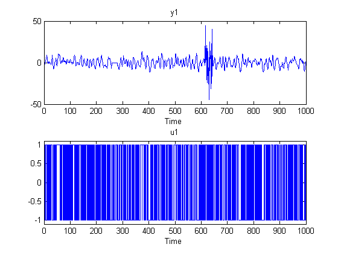 We see that there are some problems with the output around sample 250-280 and around samples 600 to 650. These might have been sensor failures.
Therefore split the data into three separate experiments and put then into a multi-experiment data object:
d1 = dat(1:250);
d2 = dat(281:600);
d3 = dat(651:1000);
d = merge(d1,d2,d3) % merge lets you create multi-exp IDDATA object
time domain data set containing 3 experiments.
Experiment Samples Sampling Interval
Exp1 250 1
Exp2 320 1
Exp3 350 1
Outputs Unit (if specified)
y1
Inputs Unit (if specified)
u1
The different experiments can be given other names, for example:
d.exp = {'Period 1';'Day 2';'Phase 3'}
time domain data set containing 3 experiments.
Experiment Samples Sampling Interval
Period 1 250 1
Day 2 320 1
Phase 3 350 1
Outputs Unit (if specified)
y1
Inputs Unit (if specified)
u1
To examine it, use plot, as in plot(d).
Performing Estimation Using Multi-Experiment Data
As mentioned before, all model estimation routines accept multi-experiment data and take into account that they are recorded at different periods. Let us use the two first experiments for estimation and the third one for validation:
de = getexp(d,[1,2]); % subselection is done using the command GETEXP using numbers dv = getexp(d,'Phase 3'); % or names. m1 = arx(de,[2 2 1]); m2 = n4sid(de,2); m3 = armax(de,[2 2 2 1]); compare(dv,m1,m2,m3)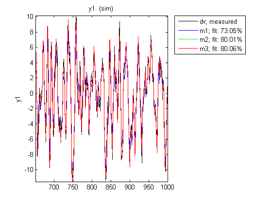
Compare also accepts multiple experiments:
pause off compare(d,m1,m2,m3) %generates three plots if pause is on; showing only the last one here pause on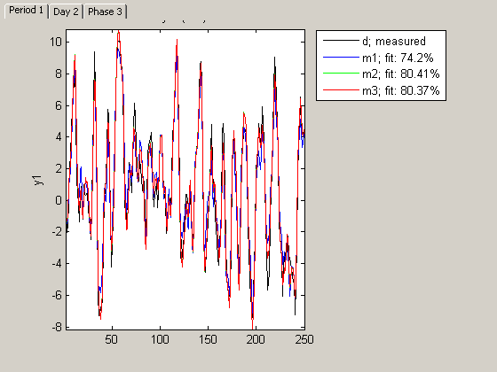
Also, spa, etfe, resid, predict, sim operate in the same way for multi-experiment data, as they do for single experiment data.
Merging Models After Estimation
There is another way to deal with separate data sets: a model can be computed for each set, and then the models can be merged:
m4 = armax(getexp(de,1),[2 2 2 1]);
m5 = armax(getexp(de,2),[2 2 2 1]);
m6 = merge(m4,m5); % m4 and m5 are merged into m6
This is conceptually the same as computing m from the merged set de, but it is not numerically the same. Working on de assumes that the signal-to-noise ratios are (about) the same in the different experiments, while merging separate models makes independent estimates of the noise levels. If the conditions are about the same for the different experiments, it is more efficient to estimate directly on the multi-experiment data.
We can check the models m3 and m6 that are both ARMAX models obtained on the same data in two different ways:
[m3.a;m6.a] [m3.b;m6.b] [m3.c;m6.c] compare(dv,m3,m6)
ans =
1.0000 -1.5036 0.7009
1.0000 -1.5024 0.7001
ans =
0 1.0079 0.4972
0 1.0073 0.4988
ans =
1.0000 -0.9745 0.1569
1.0000 -0.9753 0.1584

Case Study: Concatenating Vs. Merging Independent Datasets
We now turn to another situation. Let us consider two data sets generated by the system m0. The system is given by:
m0
State-space model: x(t+Ts) = A x(t) + B u(t) + K e(t)
y(t) = C x(t) + D u(t) + e(t)
A =
x1 x2 x3
x1 0.52957 -0.476 0.12379
x2 -0.476 -0.097434 0.13542
x3 0.12379 0.13542 -0.82332
B =
u1 u2
x1 -1.1465 -0.037633
x2 1.1909 0.32729
x3 0 0
C =
x1 x2 x3
y1 -0.18671 -0.58832 -0.1364
y2 0.72579 0 0.11393
D =
u1 u2
y1 1.0668 0
y2 0 0
K =
y1 y2
x1 0 0
x2 0 0
x3 0 0
x(0) =
x1 101
x2 -100
x3 200
This model was not estimated from data.
Sampling interval: 1
The data sets that have been collected are z1 and z2, obtained from m0 with different inputs, noise and initial conditions. These datasets are obtained from iddemo8.mat that was loaded earlier.
pause off
First data set:
plot(z1) %generates a separate plot for each I/O pair if pause is on; showing only the last one here
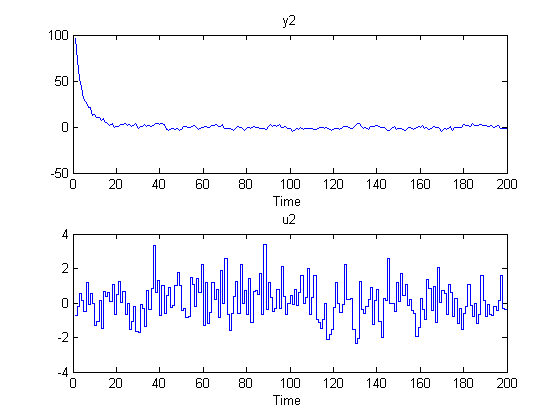 The second set:
plot(z2) %generates a separate plot for each I/O pair if pause is on; showing only the last one here
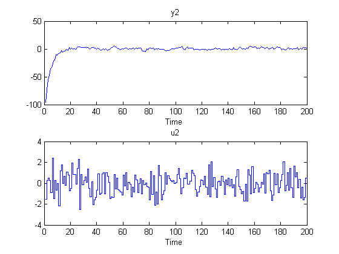 If we just concatenate the data we obtained:
zzl = [z1;z2]
plot(zzl)
pause on
Time domain data set with 400 samples.
Sampling interval: 1
Outputs Unit (if specified)
y1
y2
Inputs Unit (if specified)
u1
u2

A model amy be obtained by using pem:
ml = pem(zzl,3,'nk',[0 1]); % No delay from input # 1 and one from input # 2
Bode response from Input#1 to Output#1
bode(m0(1,1),ml(1,1)), legend('m0(1,1)','ml(1,1)')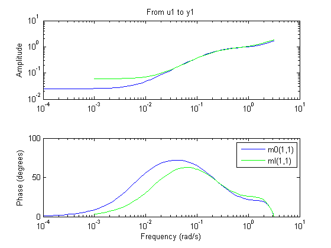
Bode response from Input#2 to Output#1
bode(m0(1,2),ml(1,2)), legend('m0(1,2)','ml(1,2)')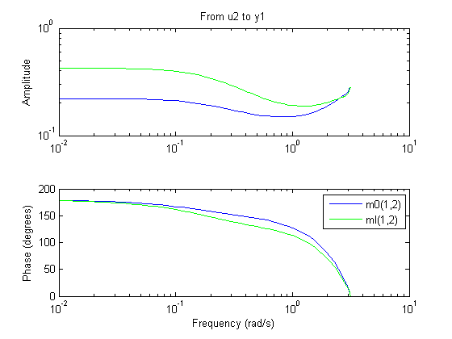
Bode response from Input#1 to Output#2
bode(m0(2,1),ml(2,1)), legend('m0(2,1)','ml(2,1)')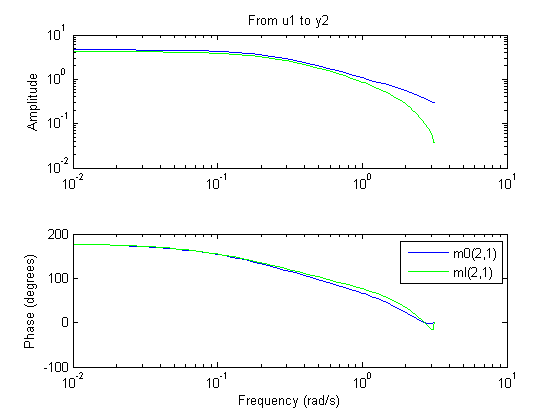
Bode response from Input#2 to Output#2
bode(m0(2,2),ml(2,2)), legend('m0(2,2)','ml(2,2)')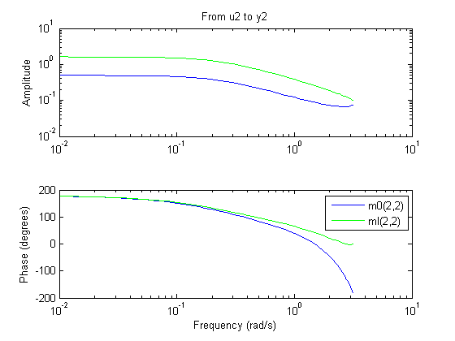
This is not a very good model, as observed from the four Bode plots above.
Now, instead treat the two data sets as different experiments:
zzm = merge(z1,z2) % The model becomes mm = pem(zzm,3,'nk',[0 1],'cov','none','display','on');
time domain data set containing 2 experiments.
Experiment Samples Sampling Interval
Exp1 200 1
Exp2 200 1
Outputs Unit (if specified)
y1
y2
Inputs Unit (if specified)
u1
u2
Criterion: Determinant minimization
Scheme: Nonlinear least squares with automatically chosen line search method
------------------------------------------------------------------------------------------
Norm of First-order Improvement (%)
Iteration Cost step optimality Expected Achieved Bisections
------------------------------------------------------------------------------------------
0 1.1078 - 3.75e+003 4.72 - -
1 1.05152 0.133 352 4.72 5.08 0
2 1.03713 0.105 138 1.36 1.37 0
3 1.03708 0.00154 38.7 0.00423 0.0044 0
------------------------------------------------------------------------------------------
Let us compare the Bode plots of the true system (blue) the model from concatenated data (green) and the model from the merged data set (red): Bode response from Input#1 to Output#1:
bode(m0(1,1),'b',ml(1,1),'g',mm(1,1),'r'), legend('m0(1,1)','ml(1,1)','mm(1,1)')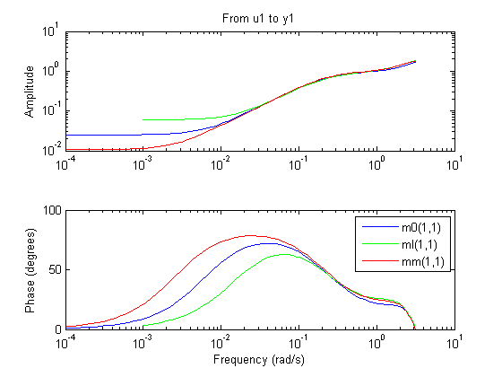
Bode response from Input#2 to Output#1:
bode(m0(1,2),'b',ml(1,2),'g',mm(1,2),'r'), legend('m0(1,2)','ml(1,2)','mm(1,2)')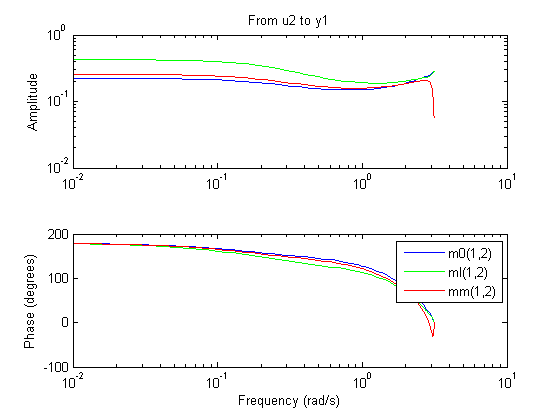
Bode response from Input#1 to Output#2:
bode(m0(2,1),'b',ml(2,1),'g',mm(2,1),'r'), legend('m0(2,1)','ml(2,1)','mm(2,1)')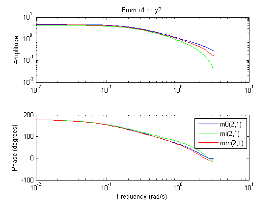
Bode response from Input#2 to Output#2:
bode(m0(2,2),'b',ml(2,2),'g',mm(2,2),'r'), legend('m0(2,2)','ml(2,2)','mm(2,2)')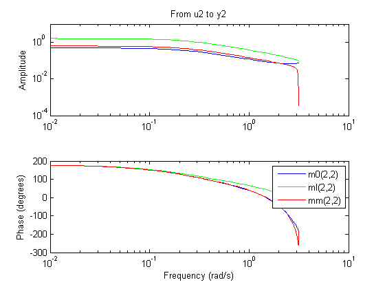
The merged data give a much better model, as observed from the plot above.
Conclusions
In this demo we saw how to use multiple data sets together for estimation of one model. This technique is useful when you have multiple datasets from independent experiment runs or when you segment data into multiple sets to remove bad segments. Multiple experiments can be packaged into a single IDDATA object, which is then usable for all estimation and analysis requirements. This technique works for both time and frequency domain data.
It is also possible to merge models after estimation. This technique can be used to "average out" independently estimated models. If the noise characteristics on multiple datasets are different, merging models after estimation works better than merging the datasets themselves before estimation.
Additional Information
For more information on identification of dynamic systems with System Identification Toolbox visit the System Identification Toolbox product information page.